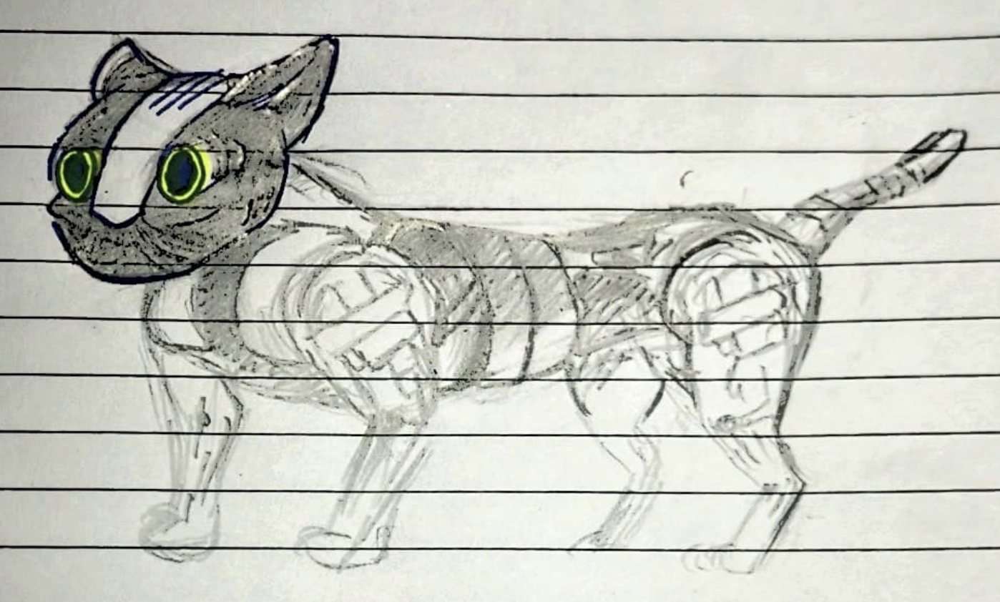
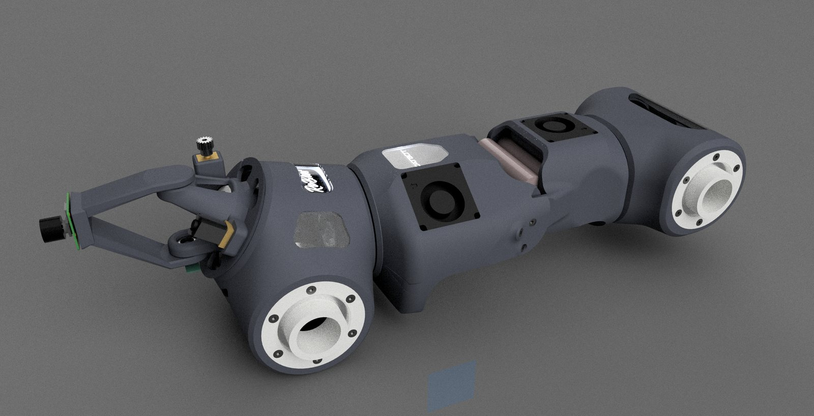

A 19-degree-of-freedom quadruped sized and massed like a real wildcat, built around a decentralised electronic nervous system — one compute node per joint, a Jetson doing the thinking, STM32s holding the reflexes, and a sensory stack that emits nothing.
Concept art by Marek Madej, used here as a visual reference for the form CatBot is working toward — not a render of the build. The engineering below is mine; this image is not.
The actual machine — current CAD assembly: shoulder and hip housings, the 8S2P cell pack, directed cooling and the stereo head.
During my JEE year a young orange cat used to work the tree outside my window. One afternoon it went up after a bird's nest — thirty seconds of route planning, a committed jump, four independent limbs solving the landing on the way down, and no visible hesitation at any point. That was a 4 kg animal running closed-loop dynamics I couldn't have written.
CatBot is the attempt to build that. Not a general-purpose quadruped scaled down, but a machine held to the actual physical envelope of the animal it copies: the footprint and all-up mass of a Felis lybica-class wildcat, under 5 kg, with the agility budget that implies. Every design decision downstream — distributed control, passive sensing, split-brain power — falls out of refusing to relax that constraint.


The obvious way to build a quadruped is a central controller wired to every motor and sensor. It works, and it stops working the moment you care about mass, latency or wiring. Twenty-odd actuators fanning back to a single board is a rat's nest that weighs more than the parts it connects, and every sensor reading pays a round trip before anything can act on it.
CatBot inverts that. Control is pushed out to the joints and the spine carries messages, not motor phases. What runs down the body is a CAN-FD differential pair and power — nothing else. A joint that needs a load cell or a rangefinder plugs it into the node already bolted to that joint, and it appears on the bus. Adding a limb is adding nodes, not rewiring the robot.
The stack is split so that each processor does only what its physics suits it for — massive parallel compute, deterministic reflex, or local current control.
Perception and planning run on a general-purpose Linux box with a scheduler and a GPU. Nothing with a hard deadline is permitted to live there. If it freezes mid-stride, the brainstem still has authority to put the robot into a safe pose.
Its job is to be boringly predictable under stress: fixed-rate loops, hardware interrupts, no dynamic allocation. Every microsecond it spends on perception is a microsecond it isn't available to catch a fault.
Splitting the CAN chain left/right means one bus fault takes down one side of the robot, not the whole machine. Termination is fitted only on the two leaf nodes — interior nodes stay unterminated.
The node itself is a custom PCB derived from the open-source mjbots moteus r4.11 controller. The proven power stage, DRV8353S gate driver and STM32G4 core are kept intact; what's added is everything a distributed node needs and a bare motor controller doesn't.
Each node fuses a BLDC driver running FOC with an onboard 6-axis IMU, a multizone time-of-flight ranger, a programmable I²C port for load cells or secondary encoders, a servo/aux output with its own 5 V current sense, and an onboard 5 V / 3 A supply. A solder bridge selects CAN termination. The result is genuinely copy-pasteable: the same board, the same firmware image, a different node ID.
At roughly $44 or ₹4000 a board, putting one on every joint costs less than the connectors and harness it replaces.
v1.0 boards are fabricated and X-ray inspected; bench testing and the firmware port are in progress. The full hardware architecture, pin map, power tree and firmware deltas live on their own page.
X-ray inspection of a fabricated v1.0 board — internal layers, via structure and QFN void fraction, checked before assembly.
Nineteen actuated degrees of freedom — seventeen in the body, two for head rotation — deliberately mixed rather than uniform. Torque density where the gait needs it, cheap mass where it doesn't.
Belt-driving the knees rather than mounting motors at the joint is the single biggest agility decision in the machine. Distal mass is what a leg has to accelerate and decelerate every stride; moving six motors up toward the body cuts limb inertia sharply and buys back swing-phase bandwidth that no amount of controller tuning would recover.
Most cheap 3D perception cheats by projecting a structured-light or IR dot pattern and reading it back. That is fine for one robot in a room and useless the moment there are two — each unit's projector blinds the other's receiver, and both degrade. It is equally useless anywhere you'd rather not announce yourself with an infrared floodlight.
So CatBot's sensing is strictly passive. Nothing on the robot illuminates the scene. Except if you have a thermal camera and see the actuators gleaming fresh from a sprint.
The distributed ToF array triggers a hardware interrupt straight into the STM32 — a spinal reflex. The limb has already begun retracting by the time the obstacle appears in a Jetson frame. Latency here is bounded by interrupt priority, not by a perception pipeline.
The analogue path exists so the STM32 can watch for an acoustic anomaly with the GPU completely powered down. The digital 192 kHz I²S path exists so the Jetson can do time-difference-of-arrival across the array and actually localise the source. One sensor, two very different duty cycles.
Head shell — the canopy carries the passive stereo pair and the MEMS microphone array on a two-axis gimbal.
Energy comes from an 8S2P pack of Molicel INR21700-P45B cells — sixteen cells, ~29.6 V nominal, 266 Wh. The P45B was chosen for discharge headroom rather than raw capacity: a legged robot's current profile is spiky, and pack sag during a push-off is what actually limits what the gait can do.
The more interesting half is what happens when the robot isn't moving. Because the brainstem is genuinely separate silicon on its own rail, CatBot can enter a state where the Jetson and every motor ESC are fully powered down — not idling, not in a low-power governor state, off. The core STM32G0 remains awake drawing microamps, watching the analogue microphone line.
A specific acoustic signature fires a hardware interrupt. That interrupt does two things at once: it whips the head gimbal onto the bearing of the sound — an acoustic spinal reflex, the same twitch a real cat's ears make before the rest of it has decided anything — and it begins booting the GPU. By the time the Jetson is up, the camera is already pointed at whatever made the noise.
Jetson Orin Nano enclosure — directed airflow over the module, sized to sit inside the thorax without becoming the thermal bottleneck.
CatBot is designed to report to an external coordinating system rather than operate as an island, over a deliberately redundant dual link:
The split matters because the two links fail for uncorrelated reasons. HaLow dies to terrain and distance; cellular dies to coverage and congestion. Losing both simultaneously is a much rarer event than losing either.
The production shell is forged carbon fibre with titanium alloy fasteners and hardware — chosen for stiffness-to-mass and for surviving impacts that a printed shell would not. Forged composite in particular tolerates the complex, non-developable geometry an animal-shaped exoskeleton demands, where a laid-up sheet would need far more parts and joints.
Everything currently in hand is 3D-printed, split across a primary structural material for shoulders, hips and hatches and a secondary material for bearing inserts and locks, plus CNC limb mounts. Printing is the iteration path, not the end state: it's how joint geometry gets validated before anything expensive gets committed.
The platform is not waterproof. That's a deliberate deferral, not an oversight — sealing a 19-joint machine is a whole project of its own, and it isn't this one yet.
The software architecture is specified and partly prototyped; it is not yet running on the robot. The intended stack:
The ordering is deliberate and comes out of a self-study syllabus I wrote for the project: architecture, then middleware, then URDF and frames, then firmware, then actuator characterisation, then power, then calibration — perception and learned policy last. Most integration failures on robots this size are frame errors, timing errors or power droop wearing a costume, and they're cheapest to find in that order.
The capability set — small footprint, quiet passive sensing, dense proprioception, genuinely long dormancy — points at environments where a wheeled platform can't go and a person shouldn't:
That last-but-one item makes CatBot dual-use, and it's worth being direct about it. The platform is designed for sensing and standoff, not for weaponisation — there is no payload interface for one and there won't be. It's an instrument that reports what it sees to trained operators who make the decisions. Anything beyond that is a legal, ethical and export-control question, and not one an undergraduate project gets to answer for itself.
CatBot is an ongoing build. Honest state of play:
hw_version hardcode, pin remaps, phase-order fixNothing on this page describes hardware that has been validated end-to-end. Where something is designed rather than working, it says so.
On the bench: the torso printed and assembled — bearing races seated in the shoulder and hip bores, blowers fitted, power leads run out. Structure before electronics.
The design started from feline anatomy rather than from an existing robot: skeletal proportion, superficial musculature and where a cat actually carries its mass, worked back into a kinematic chain that a motor can drive.
Concept and preliminary CAD sheet — anatomy references, the original ink block diagram of the compute stack, and the side elevation the current assembly grew from.